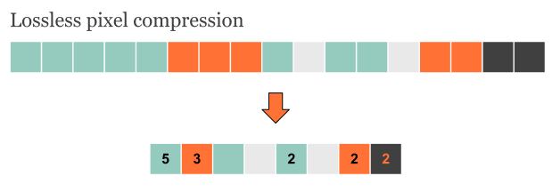
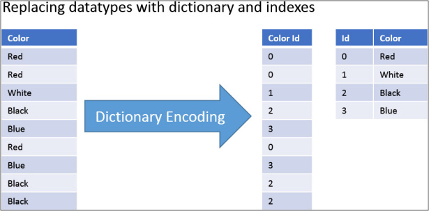
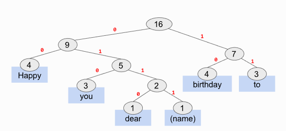

Run length encoding works by countng how many of each repeated data folow each other. Then, this is noted as a shorter way of representing that string of data. For example, 444444 could be compressed into 6 '4's. This method however, is often used for images that do not want to lose any fidelity, such as PNG files.
Dictionary encoding is another method of lossless compression. It works by assigning values to each individual item in a data set. This method works especially well for files such as text documents. As every word is saved and can be referenced, no data is lost. In documents in which contain a lot of words, this method of compression can vastly reduce file size

Huffman coding is an optimised dictionary encodng method where the frequency of items occuring affects the length of code used to denote them. The more frequently a word is used, Binary trees are structures built by building down from the most frequent words down to the least frequent at the bottom. Each word (assigned to a "node") is referenced by a series of left and right directions reffered to as 1s and 0s. 0 refers to left and 1 refers to right at any intersection. Below demonstrates a basic binary tree for "Happy Birthday to you" 
The idea behind allowing these organisations to intercept and monitor comunications is to achieve the following: